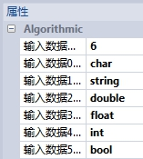

TXT文本写入工具主要目的是能够灵活、便捷的记录数据，方便事后分析。一般配合数据包生成工具及字符串解析工具来自由组合、编辑多种数据源的存储样式。
| 分类 | 参数名称 | 参数描述 |
|---|---|---|
| 属性窗口 | 文件路径 | TXT文本的保存路径。 |
| 图像窗口 | 无 | 无 |
| 数据链 | 文本名称 | TXT文本的名称，注意需要带上文件后缀名(*.txt)。 |
| 写入内容 | 要存入TXT文本的内容，可配合数据包生成工具及字符串解析工具使用。 | |
| 覆盖内容 | 要存入TXT文本的内容是否覆盖之前内容。 | |
| 高级界面 | 无 | 无 |
| 分类 | 参数名称 | 参数描述 |
|---|---|---|
| 监视窗口 | 执行结果 | 工具执行结果。 |
| 执行时间 | 工具执行时间。 | |
| 图像窗口 | 无 | 无 |
| 数据链 | 无 | 无 |
通过与数据包生成工具、字符串解析工具组合使用，可以自由、便捷的组合编辑多个数据源输出格式，使输出的文本信息更加丰富。
图1 (a) 给出了一组由数据包生成工具生成的包含多种数据类型的数据组合，图1 (b) 给出对应的字符串格式化的转换格式。（bool型变量输出结果为0和1，用%d转换）。

参见“\Samples\TXT文本写入工具.gvp”。